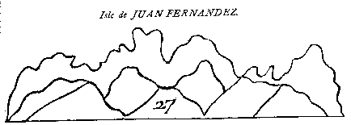
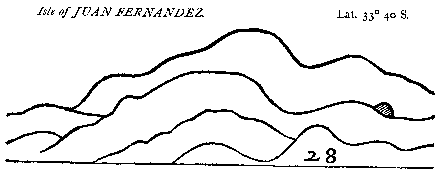

|
Thursday,
December 23rd.
All the night past we had a fresh wind. But in the morning, from top-mast
head, we descried a hummock of land. In the evening we saw it again. We
found afterwards that what we had seen was the westernmost island of Juan
Fernandez; which is nothing but a mere rock, there being no riding, nor
scarce landing, near to it.
|
|
Friday,
December 24th.
This morning we could descry the island of Juan Fernandez itself S. by E.,
it being at sixteen leagues distance when we saw it yesterday. At seven
this morning the island stood E., the wind being N.W. or by N. At eight
the same morning the island, at the distance of five leagues, little more
or less, appeared thus: |
|
 |
|
Here my
observation was that I could see neither fowl nor fish near this island;
both which things are usually to be seen about other islands. Having told
my observation to our pilot, he gave me for answer, that he had made many
voyages by this island, and yet never saw either fowl or fish any more
than I. Our reckoning this day was an E.S.E. way, and hereby thirty-six
leagues. By observation, lat. 33¡ 30« S.
|
|
Saturday,
December 25th.
Yesterday in the afternoon, at three o'clock, we saw the other island,
making two or three hummocks of land. This morning we were about eight
leagues distant from it, the island bearing E.S.E. from us. At eight the
same morning we were right abreast with it. Here therefore are two islands
toge ther, the biggest whereof is three leagues and a half in length,
nearest N.W. and S.E., the other, and lesser, is almost one league, and
no more in circumference. At ten o'clock we sent off from the ship one
of our canoes, to seek for the best landing and anchoring for our vessel.
As we approached, both islands seemed to us nothing but one entire heap
of rocks. That which lies more to the N. is the highest, though we could
not now see the tps thereof, for the clouds which covered it. In most
places it is so steep that it becomes almost perpendicular. This day being
Christmas-day, we gave in the morning early three vollies of shot for
solemnization of that great festival. I reckoned an E. by S. way. By a
clear observation from the middle of the island, lat. 33¡ 45« S., and
M.D. ninety-nine leagues. In the evening of this day, we came to an anchor
at the south end of the island, in a stately bay that we found there,
but which lies open from the S, to to the S.E. winds. We anchored in eleven
fathom water, and at the distance of onely onefurlong from the shore.
Here we saw multitudes of seals covering the bay everywhere, insomuch
that we were forced to kill them to set our feet on shore.
|
|
Sunday,
December 26th.
This day we sent a canoe to see if we could find any riding secure from
the southerly winds; these being the most constant winds that blow on
these coasts. The canoe being gone, our commander sent likewise what men
we could spare on shore, to drive goats, whereof there is great plenty
in this island. They caught and killed that day to the number of threescore,
or thereabouts. The canoe returning to the ship made report that there
was good riding in another bay, situate on the North side of the island,
in fourteen fathom water, and not above one quarter of a mile from the
shore. Moreover that there was much wood to be had, whereas in the place
where we had first anchored, not one stick of wood nor tuft of grass was
to be found.
|
|
The
next day, being the 27th,
between two and four o'clock in the morning, we had a tempest of violent
winds and fierce showers of rain. The same day we got in two hundred jars
of water, bringing them the full distance of a league from the place of
our riding. In the meanwhile, others were employed to catch goats, as
they had done the day before.
|
|
On
the 28th of the said month,
in the morning, I went with ten more of our company and two canoes, to fetch
water from the land. Being come thither, and having filled our jars, we
could not get back to the ship, by reason of a southerly wind that blew
from off the ocean, and hindered our return. Thus we were forced to lie
still in a water-hole, and wait till the winds were over for a safer opportunity.
Meanwhile, the violence of the wind increasing, our ship was forced to get
under sail, and make away, not without danger of being forced shore. Hereupon
she sailed out of the harbour, to seek another place of anchoring. At noon
I ventured out, to try if I could follow the ship, but was forced in again
by the wind and a raging sea. Thus we lay still for some while longer, till
the evening came on. This being come, we ventured out again both canoes
together; but the winds were then so high, that we were forced to throw
all our jars of water overboard to lighten our boats, otherwise we had inevitably
perished. I ought to blessand praise God Almighty for this deliverance;
for in all human reason, the least wave of that tempest must have sunk us.
Notwithstanding, we came that night to our place or harbour, where we expected
to have found our ship (called False Wild Harbour) but found her not. Hereupon,
not knowing what to do, we went ashore, and hauled up our canoes dry. Having
done this, we ascended higher within the island, along a gulley, for the
space of half a mile, there to clear ourselves of the noise and company
of the seals, which were very troublesome on the shore. Here we kindled
a fire, dried our clothes, and rested ourselves all night, though with extremely
hungry bellies, having eaten very little or nothing all the day before.
In the sides of the hill, under which we lay, we observed many holes like
coney-holes. These holes are the nests and roosting-places of multitudes
of birds that breed in this island, called by the Spaniards Pardelas. One
of these birds, as we lay drying and warming ourselves, feel down into our
fire. |
|
The
next morning being come,
very early before sunrise, we went farther to the northward, to seek for
our ship, which we feared we had lost. But we were not gone far, when
we soon spied her at sea. Hereupon we passed a point of land, and entered
a certain bay, which was about a mile deep, and not above half a league
over. Into this bay we put, and instantly made a fire, thereby to show
the ship whereabouts we were. Here we found good watering and wooding
close to the shore. In this bay also we saw another sort of amphibious
animal, which I imagined to be the same that by some authors is called
a Sea-Lion. These animals are six times bigger than seals. Their heads
are like that of a lion, and they have four fins not unlike a tortoise.
The hinder parts of these creatures are much like fins, but are drawn
after them, being useless upon the shore. They roared as if they had been
lions, and were full of a certain short and thick hair, which was of a
mouse colour; but that of the young ones was somewhat lighter. The old
ones of these sea-lions are between twelve and fourteen feet long, and
about eleven or twelve feet in circumference. A seal is very easily killed,
as we often experimented, but two of our men with great stones could not
kill one of these animals. That day in the afternoon there came a canoe
from on board the ship with provisions for us, they fearing lest we should
be starved. In like manner the launch came with men to cut wood. They
told us that the ship came to an anchor in the other bay, but that within
half an hour the cable broke, and they were forced to leave their anchor
behind them and get out to sea again.
Night being
come, we made our beds of fern, whereof there is huge plenty upon this
island; together with great multitudes of trees like our English box,
which bear asort of green berries, smelling like pimento, or pepper.
All this
day the ship was forced to ply off at sea, not being able to get in
. |
|
December
30th.
The morning of this day we employed in filling water and cutting down
wood. But in the afternoon, eight of us eleven went aboard the ship, all
in one and the same canoe, sending her ashore again with provisions for
the men that were there. This day in like manner we could not get into
the harbour, for no sooner the ship came within the parts of land but
the wind, coming out of the bay, blew us clear out again. Thus we were
forced to ply out all that night and great part of the following day.
|
|
On
the next day,
having overcome all difficulties and many dangers, we came to an anchor
in the afternoon, in fifteen fathom water, at the distance of a cable's
length from shore. Here it was observable that we were forced to keep
men ashore on purpose to beat off the seals, while our men filled water
at the sea-side, at high-water mark, for the seals covet hugely to lie
in fresh water. About this island fish is so plentiful that, in less than
one hour's time, two men caught enough for our whole company.
|
|
Saturday,
January 1st, 1681.
This day we put up a new main-top, larger than the old one, and we caught
cray-fish that were bigger than our English lobsters.
|
|
The
next day, being January 2nd,
died a chief man of our company, whose name was John Hilliard. This man,
until our weighing anchor from the port of Coquimbo, had been our Master
all the space of this voyage. But from that time we chose John Cox for
the starboard, and John Fall for the larboard watch. The disease whereof
he died was dropsy. That evening we buried our dead companion, and gave
him a volley for his funeral, according to the usual custom.
|
|
On
January 3rd
we had terrible gusts of wind from the shore every hour.
| This
day our pilot told us that many years ago a certain ship was cast
away upon this island, and only one man saved, who lived alone upon
the island five years before any ships came this way to carry him
off. |
The island
had excellent land in many valleys belonging thereunto. This day likewise
we fetched our anchor which we left in the other bay when the ship broke
her cable. |
|
Tuesday,
January 4th, 1681.
This day we had such terrible flaws of wind, that the able of our ship
broke, and we had undoubtedly been on shore had not the other held us
fast. At last it came home and we drove outward. By the way it caught
hold of a rock, and held some time, but at last we hauled it up, and the
wind came with so much violence that the waves flew as high as our main-top,
and made all the water of a foam.
|
|
January
5th,
the same huge gusts of wind continued all the night last past, not- withstanding
which this day at noon it was brave and calm. But in the morning the anchor
of our ship gave way again, and we drove to the eastward mor than half
a mile; till at last we happened to fasten again in sixty fathom water.
Here in this bay, where we rode at anchor, did run a violent current,
sometimes into and at other times out of the bay, so that all was uncertain
with us. But our greatest discomfort was, that our men were all in a mutiny
against each other, and much di- vided among themselves, some of them
being for going home towards England, or our foreign plantations, and
that round about America through the Straits of Magellan, as Captain Sawkins
had designed to do; others of them being for staying longer, and searching
farther into those seas, till such time as they had got more money. This
day at noon our anchor drove again; whereupon to secure ourselves from
that dangerous place, we sailed thence into the West bay, anchored there
in twenty-five fathom water; and moored our ship one quarter of a mile
from shore.
|
|
On
Thursday, January 6th,
our differences being now grown to a great height, the mutineers made
a new election of another person to be our chief captain and commander,
by virtue whereof they deposed Captain Sharp, whom they protested they
would obey no longer. They chose therefore one of our company, whose name
was John Watling, to command in chief, he having been an old privateer,
and gained the esteem of being a stout seaman. The election being made,
all the rest were forced to give their assent to it, and Captain Sharp
gave over his command, whereupon they immediately made articles with Watling,
and signed them.
|
|
The
following day, being the 7th,
we burnt and tallowed the starboard side of our ship. In this bay where
we now anchored, we found a cross cut in the bark of a tree, and several
letters besides. Hereupon, in another tree up the gulley, I engraved the
two first letters of my name, with a cross over them. This day likewese
William Cook, servant to Captain Edmund Cook, being searched, we found
a paper with all our names written in it, which it was suspected he designed
to have given to the Spanish prisoners. For these reasons this evening
our Captain thought it convenient t put him in irons, which was accordingly
done.
|
|
The
next day
we finished the other side of our ship.
|
|
Sunday,
January 9th.
This day was the first Sunday that ever we kept by command and common
consent, since the loss and death of our valiant commander, Captain Sawkins.
This generous-spirited man threw the dice overboard, finding them in use
on the said day.
|
|
January
10th.
This day the weather was very clear and settled again. We caught every
day in the bay where we now were great plenty of fish; and I saw the same
day a shoal of fish a mile and more long.
|
|
On
the next day, being the 11th,
we filled our water and carried our wood on board the ship. Moreover,
our two canoes went to the other side of the island to catch goats, for
on the barren side thereof are found and caught the best; and by land
it is impossible to go from one side of the island to the other.
|
|
Wednesday,
January 12th.
This morning our canoes returned from catching goats, firing guns as they
came towards us to give us warning. Being come on board, they told us
they had espied three sail of ships, which they conceived to be men-of-
war, coming about the island. Within half an hour after this notice given
by our boats, the ships came in sight to leeward of the island. Hereupon
we immediately slipped our cables and put to sea, taking all our men on
board that were ashore at that time.
| Only
one, William, a Mosquito Indian, was then left behind on the island,
because he could not be found at this our sudden departure. |
Upon the
island of Juan Fernandez grow certain trees that are called by the name
of bilby trees. The tops of these trees are excellent cabbage, and of
them is made the same use that we do of cabbage in England. Here fish
abound in such quantity, that on the surface of the water I have taken
fish with a bare and naked hook, that is to say unbaited. Much fish is
taken here of the weight of twenty pounds; the smal- lest that is taken
in the bay being almost two pound weight. Very good timber for building
of houses and other uses is likewise found upon the island. It is distant
from the main continent ninety-five leagues, or thereabouts, being situate
in 33¡ 40« S. The plats of the island lie N.W. and S.E. Being got out
of the bay we stood off the sea, and kept to windward as close as we could.
The biggest of these Spanish men-of-war, for such they proved to be, was
of the burden of eight hundred tons, and was called El Santo Christo,
being mounted with twelve guns. The second, named San Francisco, was of
the port of six hundred tons, and had ten guns. The third was of the carriage
of three hundred and fifty tons, whose name I have forgot. As soon as
they saw us, they instantly put out their bloody flags, and we, to show
them that we were not as yet daunted, did the same with ours. We kept
close under the wind, and were, to confess the truth, very unwilling to
fight them, by reason they kept all in a knot together, and we could not
single out any one of them, or seperate him from the rest. Especially
considering that our present commander Watling had showed himself at their
appearance to be faint-hearted. As for the Spaniards themselves, they
might have easily come to us, since we lay by several times; but undoubtedly
they were cowardly given, and peradventure as unwilling to engage us as
we were to engage them.
|
|
The
following day, being January 13th,
in the morning we could descry one of the fore-mentioned men-of-war under
the leeward side of the island; and we believed that the rest were at anchor
thereabouts. At W. by S. and at the distance of seven leagues the island
appeared thus: |
|
 |
|
At
noon that day we stood towards the island, making as if that we intended
to be in with them. But in the afternoon our commander propounded the question
to us, whether we were willing now that the fleet was to windward, to bear
away from them? To this we all agreed with one consent. And hereupon, night
being come, with a fresh wind at S.S.E. we stood away N.E. by N., and thus
gave them handsomely the slip, after having outbraved them that day and
the day before. |
| |
|